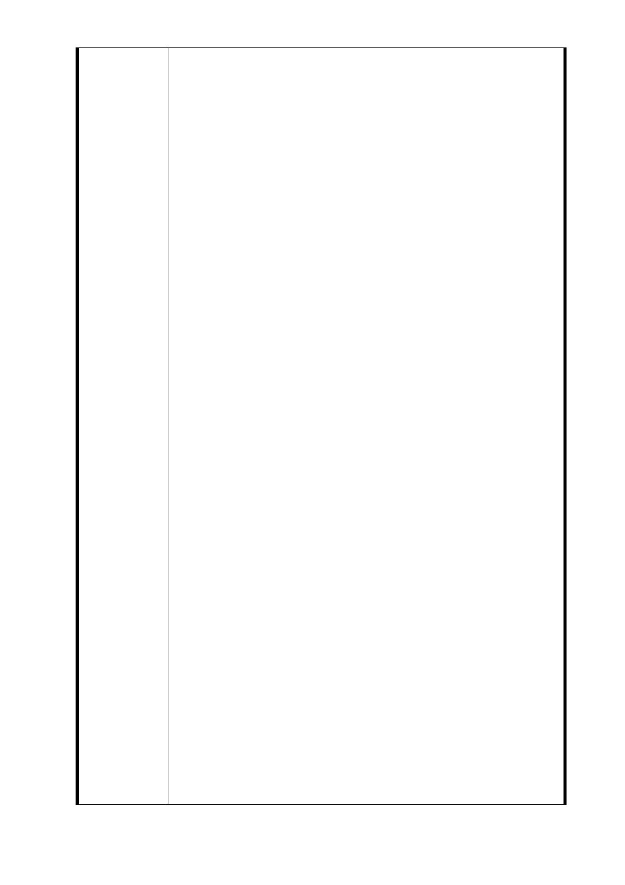

延線底端 RO3 已是信義路最末端（碰山），這樣不經濟
不環保開發，那算帶動經濟繁榮。為何要增設東延段，
RO3 站區域住戶也不贊成。汐止線都可以不通車，為
何信義東延段不能效法？增設 RO4 站是有心人士操
作，因北側捷一是本棟建築，僅臨後面一片＂松台公
寓＂有地沒土地爭議訴訟 40 餘年具有多類問題。
（1）有屋有地是本建築
（2）無屋有地
（3）無屋無地
（4）有屋無地
（5）有屋另外持分土地
（6）只有持分土地
（7）只有地號
該範圍有心人士有多戶房，私自聯絡民意代表通過東
延段，公開場合也曾當面邀功，再勾結建築業企圖私
利。
因土地爭議權難度，轉向清楚不麻煩的 33 巷 2 棟五層
樓 20 戶下重手，容易打發捷運局幫政府開發建設，是
用這種不入流的方式，如是要開發，是以爭議土地整
頓，非將合理住戶強制犧牲，根本就是搶民地、侵害
地主、公然違憲、搞謀福利，不要講好聽帶動繁榮，
住戶只求安穩，不須要靠這種方式。這是一塊小基地
510 公尺，不要以工程來完成工程，國家財政困難，
請將資源開發於有意義而宏觀的開發，捷運局所公佈
工程費，屆時是不符數字的，投資東延段利益有待考
慮。RO4 出口站將無法設置捷運轉乘區塊及停車站，
是不成熟及浪費的開發。目前終點（象山站）乘客數
字可以數，何況信義路東延段 RO3 是信義路末端（碰
山），這麼沒有經濟效益何必要有這個工程，更不用談
帶動經濟繁榮，請不要浪費人民納稅錢，更不要浪費
國家財政，捷運局對住戶的侵門踏戶，非住戶要求開
發，沒照顧住戶而是加害，捷運局想要面子又要裡子
搞雙贏吧！
我們不是投資客，是單純住戶、優良國民、優良市民、
守法百姓，是可憐無助的住戶，不要逼死住戶，我們
一生到中年流了多少血汗，省吃儉用到中年才能購一
間遮風避雨的屋子，沒有多餘能力另謀方法。到目前
尚有住戶還在貸款繳房貸，請捷運局不要拆了我們的
房子，還給下一代背債。請不要自私自利對待住戶，
更請中央政府能幫忙申張正義，全體無助住戶請求助
- 114 -